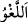
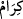
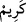
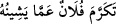
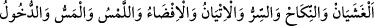
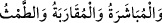

şeylerle “karşılaştıklarında vakar ile (oradan) geçip giderler.”
Fethurrahman’da der ki: “
” bütün günahlara, boş ve faydasız söz ve fiîllerin
hepsine şâmildir.”
Rağıb ise şöyle der: “
” herhangi bir itibârı ve değeri olmayan sözlerdir. Bir
düşünce ve fikirden kaynaklanmayan sözlerdir. Onun için serçe ve benzeri kuşların sesi
yerine geçer.
“
” kelimesi “
”in çoğuludur. Bir kimse kendisini ayıp ve kusurlardan uzaklaştırsa
“
” denir.
Râğıb der ki: Allah Teâlâ ‘kerem’ ile vasfedilirse, bu O’nun görünen ihsânından ve
nimetinden dolayı bir ismidir. Eğer insan kerim olmakla vasfedilirse, bu da o kimseden
zâhir olan iyi ahlâktan ve medh edilen fiil ve davranışlardan dolayıdır. Bir kimseden bu
özellik zâhir olmadıkça ona “kerîm” denilmez.
Âyetin mânâsı şöyledir: Onlar boş söz ve davranışlardan yüz çevirerek, onlar
üzerinde durmaktan ve onlara dalmaktan kendilerini aziz tutarak vakar ile oradan geçip
giderler. Bu ise hayâsızlıklardan gözleri kapayarak, kusurları affederek, açıkça
söylenmesi müstehcen olan şeyleri kinâyeli söyleyerek olur.
Keşfü’l-esrâr’da der ki: “Denilmiştir ki: Onlar nikâhtan ve tenâsül uzvundan
bahsetmek istedikleri zaman bunu kinâye ile (üstü kapalı lafızlarla) ifâde ederler. O
halde buradaki “
” kinâye ve ta‘rîz mânâsına gelir. Allah Teâlâ’nın (Hz. Îsâ ve
Meryem hakkındaki) “İkisi de yemek yerlerdi.” (el-Mâide, 5/75) sözü de bevlden ve
büyük abdest bozmaktan kinâyedir. Allah Teâlâ Kur’an’da cinsî münâsebetten,
(örtmek, nikâh, fısıldamak, gelmek, haşir neşir olmak, dokunmak, el sürmek, girmek,
teni tenine dokunmak, yaklaşmak, ilişmek, dokunmak)” gibi lafızlarla kinâye yoluyla
bahsetmiştir.
Tıpkı
“Onlara
yaklaşmayın”
(el-Bakara,
2/222),
“Onlara
dokunmamıştır” (er-Rahmân, 55/56) âyetlerinde olduğu gibi. Bu konunun Arapça’da
örnekleri çoktur.
İmam Gazzâlî der ki: “Fuhşun/hayâsızlıkığın sınırına ve hakîkatine gelince; dile
alınması çirkin sayılan hususları açık ifâdelerle anlatmaktır. Bunun çoğu cinsî
münâsebet ve onunla ilgili lafızlarda olur. Ehl-i salâh, bunları ağızlarına almaktan
kaçınırlar. Onları kinâye yoluyla anlatırlar ve onlara remizlerle işâret ederler. Mesela
cinsî münâsebetten kinâye olarak dokunmak, girmek ve beraber olmak lafızlarını;
bevletmekten kinâye olarak da ihtiyacını gidermek (kaza-i hacet) tâbirini kullanırlar.
Yine onlar “Senin hanımın şöyle dedi.” demezler. Bunun yerine “Oda’dan şöyle
denildi.” veya “Perdenin arkasından şöyle denildi.” yahut “Çocukların annesi şöyle
dedi.” derler. Utandığı ve şikâyette bulunduğu sıtma, kellik ve ârızî bir bâsur illeti ve